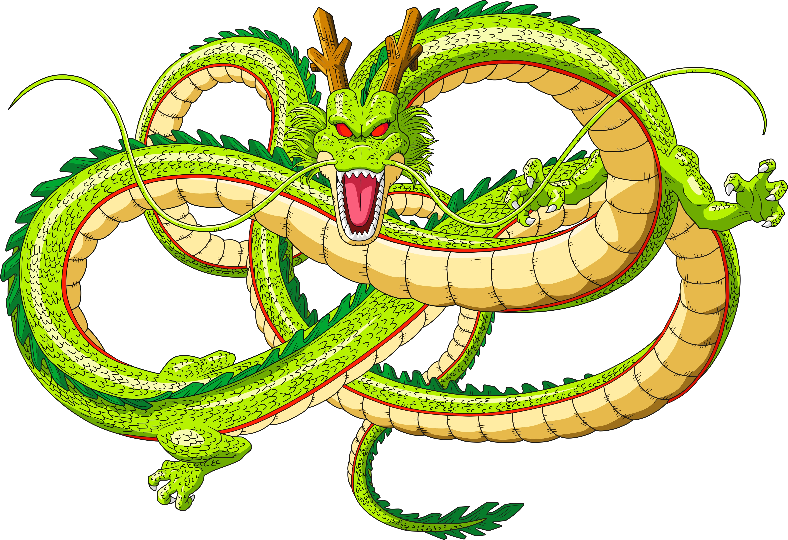
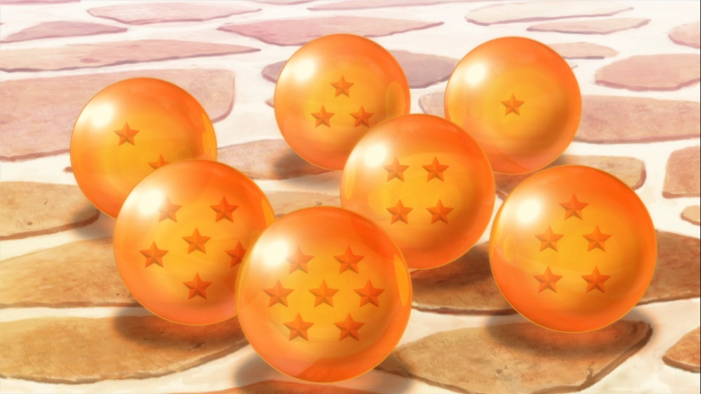
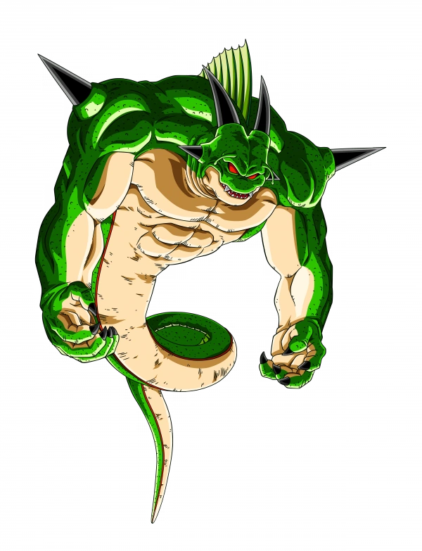
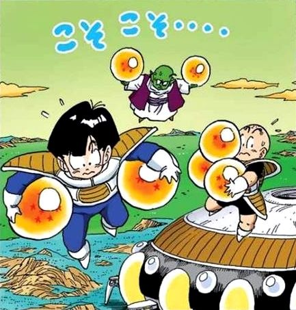
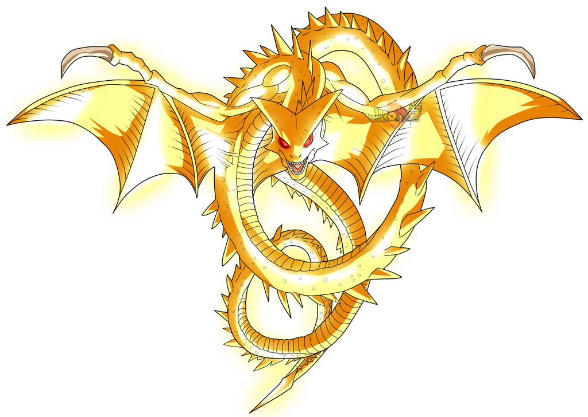
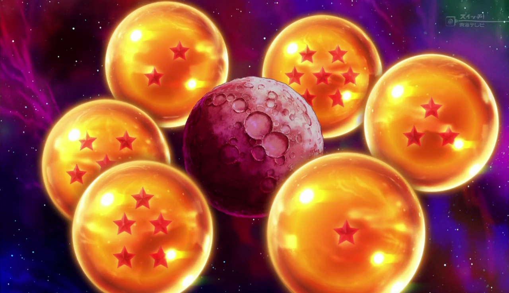

Tout au long de l'histoire de Dragon Ball, on voit apparaître plusieurs dragons exauceur de voeux et par conqéquent plusieurs boules de cristal.
Shenron est le tout premiers dragon que l'on voit surgir des boules de cristal de la planète terre. Il a été crée par le tout puissant afin de redonner espoir et courage aux humains. Il mesure deux fois la taille de la capsule corporation, il ne peut réaliser qu'un seul voeux par invoquation et ne peut pas être ré-invoquer avant un an. La résurrection d'une personne est limitée à une par personne mais peut en réssuciter plusieurs à la fois et il comprend la langue terrestre. Ces boules de cristal tiennent dans la paume d'une main
Porunga apparaît pour la première fois lors de l'arc Freezer, sur la planète namek. Son nom signe "Dieu des rêves" et a été crée par le grand chef namek afin qu'il représente la sagesse et la puissance de son peuple. Il mesure six fois la capsule corporation. Contrairement à Shenron, il accepte trois voeux, il peut ressuciter une personne plusieurs fois mais un à la fois, comprend uniquement la langue namek et peut être ré-invoquer sous 130 jours. Ces boules de cristal sont plus grosses que celles de la Terre
Super Shenron a été crée par Zalama et apparaît pour la première fois lors de la fin du tournoi de pouvoir dans Dragon Ball Super. Il est immense, doré et possède des yeux rouges, il est tellement immense qu'il peut avaler des planètes et même des galaxies toutes entières. Lorsqu'on l'invoque nous pouvons observer son noyau ainsi qu'une manifestation de sa présence devant laquelle on peut exaucer son souhait. Cette entité qui apparaît dans son corps est beaucoup plus petite que le vrai Super Shenron. Il est capable d'exaucer les souhaits les plus irréalisables et son pouvoir n'a pas de limite. Il ne comprend que la langue divine et nous n'avons pas eu d'informe sur le temps d'attente entre deux invoquations.